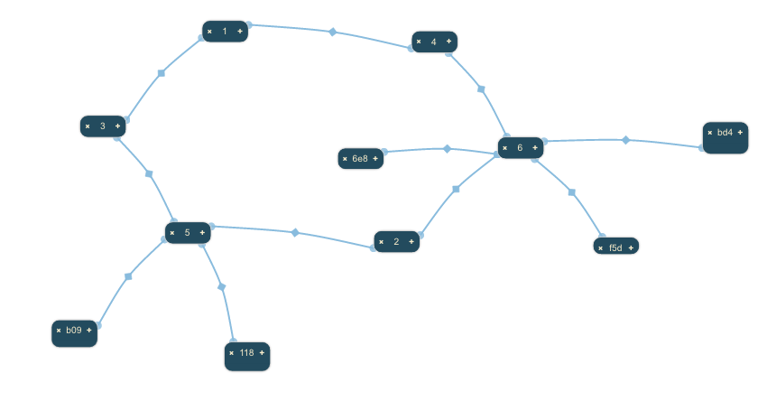

This is a force-directed layout that models edges as springs. [[Wikipedia|http://en.wikipedia.org/wiki/Force-directedgraphdrawing]] has a good introduction to these types of layouts.

This layout is useful for unstructured data - database schemas, mind maps, graphs, etc. Force-directed algorithms initially position nodes with a degree of randomness and so do not ever produce exactly the same result twice; for this reason it is recommended that you read the note on refresh vs re-layout, and also familiarise yourself with the UI state features provided by the Surface component.
toolkit.render({
container:"someElement",
layout:{
type:"Spring"
}
});
SpringLayout extends AbsoluteLayout, which means that, by default, the layout will defer to absolute node positions that are stored in the backing data for each node. This is a very useful feature for the majority of applications: you do not typically want the layout to run if a human being has already taken a look at the data and perhaps moved things around to be more to their liking.
The default parameters used by AbsoluteLayout are left and top. So for instance you might have these nodes in your data:
nodes:[
{ id:"1", left:50, top:150, label:"One" },
{ id:"2", left:150, top:250, label:"Two" }
]
By default, the Spring layout will honour these values if they are present, rather than processing the nodes.
If you do not wish to use left and top, you can provide your own locationFunction. This is discussed in the documentation for the Absolute layout.
You can switch off Absolute backing via the absoluteBacked parameter:
toolkitInstance.render({
container:"someElement",
layout:{
type:"Spring",
absoluteBacked:false
}
});
A relayout will generate a brand new arrangement of Nodes, due to the fact that Nodes are placed randomly initially.
A refresh of the layout locks the positions of any nodes that were positioned in a previous run of the layout, and these nodes do not move: only nodes that have not yet been positioned by the layout algorithm will move.
This layout switches on magnetization by default. You can suppress this behaviour by setting magnetize:false on your layout parameters:
toolkit.render({
container:"someElement",
layout:{
type:"Spring",
magnetize:false
}
});